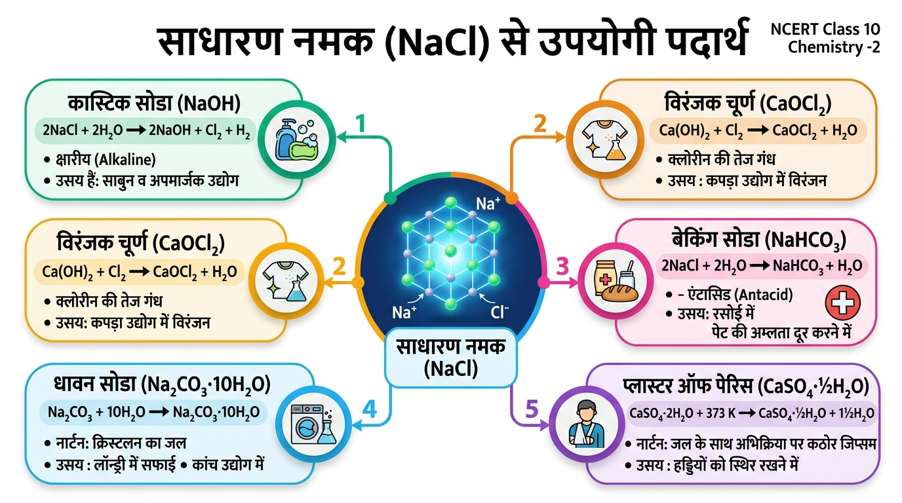

Acids, Bases and Salts | सचित्र विस्तृत डिजिटल नोट्स, 3D प्रायोगिक सिमुलेटर, इमेज प्रॉम्प्ट्स व बोर्ड परीक्षा विश्लेषण
अध्याय अवलोकन (Chapter at a Glance):
इस अध्याय में हम अम्लों एवं क्षारकों के भौतिक व रासायनिक गुणों, सूचकों द्वारा उनकी पहचान, जलीय विलयन में आयनीकरण (H⁺ एवं OH⁻ आयन), उदासीनीकरण अभिक्रिया, 0 से 14 तक विस्तृत pH पैमाना, दैनिक जीवन में pH के असाधारण महत्व तथा साधारण नमक (NaCl) से निर्मित होने वाले महत्वपूर्ण औद्योगिक लवणों—कास्टिक सोडा (NaOH), विरंजक चूर्ण (CaOCl₂), बेकिंग सोडा (NaHCO₃), धावन सोडा (Na₂CO₃·10H₂O) एवं प्लास्टर ऑफ पेरिस (CaSO₄·½H₂O) का विस्तारपूर्वक अध्ययन करेंगे।
1. अम्ल एवं क्षारक के सामान्य गुणधर्म तथा सूचक (Indicators)
अम्ल (Acids) की मौलिक पहचान:
अम्ल स्वाद में खट्टे (Sour) होते हैं।
ये नीले लिटमस पत्र को लाल कर देते हैं (ट्रिक: 'अनिल' — अ से अम्ल, नि से नीले को, ल से लाल करता है)।
जलीय विलयन में वियोजित होकर H⁺ (हाइड्रोजन आयन) अथवा H₃O⁺ (हाइड्रोनियम आयन) प्रदान करते हैं।
क्षारक स्वाद में कड़वे (Bitter) होते हैं तथा स्पर्श करने पर साबुन जैसे चिकने लगते हैं।
ये लाल लिटमस पत्र को नीला कर देते हैं (ट्रिक: 'छलनी' — क्षा से क्षारक, ल से लाल को, नी से नीला करता है)।
जलीय विलयन में OH⁻ (हाइड्रॉक्साइड आयन) उत्पन्न करते हैं।
क्षार (Alkali): जल में घुलनशील क्षारक को 'क्षार' कहते हैं (जैसे NaOH, KOH, Ca(OH)₂)। (नोट: सभी क्षार, क्षारक होते हैं, किंतु सभी क्षारक, क्षार नहीं होते क्योंकि कुछ क्षारक जल में अघुलनशील होते हैं)।
सूचक (Indicators) एवं उनके रंग/गंध में परिवर्तन तालिका:
सूचक का प्रकार व नाम
मूल रंग/गंध
अम्ल में प्रभाव
क्षारक में प्रभाव
नीला लिटमस पत्र (प्राकृतिक)
नीला (थैलोफाइटा लिचेन)
लाल हो जाता है
कोई परिवर्तन नहीं (नीला ही)
लाल लिटमस पत्र (प्राकृतिक)
लाल
कोई परिवर्तन नहीं (लाल ही)
नीला हो जाता है
हल्दी (प्राकृतिक सूचक)
पीला
पीला ही रहता है
लाल-भूरा (साबुन लगाने पर)
फिनॉल्फथलीन (संश्लेषित सूचक)
रंगहीन
रंगहीन ही रहता है
गुलाबी (Pink) हो जाता है
मेथिल ऑरेंज (संश्लेषित सूचक)
नारंगी
लाल हो जाता है
पीला हो जाता है
गंधीय सूचक (प्याज / वैनिला / लौंग तेल)
विशिष्ट गंध
गंध यथावत बनी रहती है
गंध नष्ट / समाप्त हो जाती है
क्रियाकलाप 2.1: विभिन्न सूचकों द्वारा अम्ल व क्षारक की पहचान व रंग परिवर्तन — 16:9 लैब सिमुलेटर
16:9 प्रोजेक्टर व्यू 🔬
एनसीईआरटी क्रियाकलाप 2.1: विज्ञान प्रयोगशाला में 4 परखनलियों में अम्ल व क्षारक के नमूने [तनु HCl, तनु H₂SO₄, तनु NaOH, तनु Ca(OH)₂] रखे गए हैं। नीचे दिए गए विभिन्न सूचकों के बटन दबाकर देखें कि विलयनों के रंग में क्या परिवर्तन होता है:
प्रारंभिक स्थिति: 4 परखनलियों में अम्ल (HCl, H₂SO₄) तथा क्षारक [NaOH, Ca(OH)₂] रखे हैं। ऊपर से कोई भी सूचक बटन दबाएं।
क्रियाकलाप 2.2: प्राकृतिक (हल्दी) एवं गंधीय सूचक (वैनिला, प्याज) — 16:9 लैब सिमुलेटर
16:9 प्रोजेक्टर व्यू 🔬
एनसीईआरटी क्रियाकलाप 2.2: कुछ पदार्थ ऐसे होते हैं जिनकी गंध या रंग अम्लीय या क्षारकीय माध्यम में बदल जाते हैं। नीचे हल्दी, लाल पत्तागोभी, वैनिला तथा प्याज की गंधयुक्त पट्टी पर अम्ल व क्षारक डालकर देखें कि क्या प्रभाव पड़ता है:
प्रारंभिक स्थिति: हल्दी का पेस्ट चयनित है। क्षारक (साबुन) डालने पर यह लाल-भूरा हो जाता है। ऊपर से वैनिला या प्याज चुनकर गंध परिवर्तन देखें।
2. अम्ल एवं क्षारक की धातुओं के साथ अभिक्रिया (हाइड्रोजन गैस का निर्माण)
(क) अम्ल की धातु के साथ अभिक्रिया:
जब किसी सक्रिय धातु (जैसे जिंक, मैग्नीशियम, आयरन आदि) की अभिक्रिया तनु अम्ल से कराई जाती है, तो धातु अम्ल से हाइड्रोजन को विस्थापित कर देती है तथा लवण व हाइड्रोजन गैस (H₂) का निर्माण होता है:
सामान्य रूप: धातु + तनु अम्ल ➔ लवण + हाइड्रोजन गैस (H₂↑)
परीक्षा चेतावनी: Na₂ZnO₂ का रासायनिक नाम सोडियम जिंकेट है। यह समीकरण बोर्ड परीक्षा में बार-बार संतुलित करने हेतु पूछा जाता है।
क्रियाकलाप 2.3: दानेदार जस्ते पर तनु सल्फ्यूरिक अम्ल की क्रिया व H₂ गैस का 'POP!' परीक्षण — 16:9 लैब सिमुलेटर
16:9 प्रोजेक्टर व्यू 🔬
एनसीईआरटी क्रियाकलाप 2.3: एक परखनली में 5 mL तनु H₂SO₄ लेकर उसमें दानेदार जस्ता (Zn) मिलाते हैं। निकास नली से निकलने वाली गैस को साबुन के घोल में प्रवाहित करने पर हाइड्रोजन के बुलबुले बनते हैं। पास जलती मोमबत्ती लाने पर गैस 'पॉप' (POP!) ध्वनि के साथ जलती है:
प्रारंभिक स्थिति: परखनली में जिंक दाने व तनु H₂SO₄ अम्ल तथा साबुन का घोल तैयार है। "संपूर्ण वीडियो एनिमेशन" दबाएं।
क्रियाकलाप 2.4: क्षारक (NaOH) की धातु (जिंक दाने) के साथ क्रिया व सोडियम जिंकेट (Na₂ZnO₂) निर्माण — 16:9 लैब सिमुलेटर
16:9 प्रोजेक्टर व्यू 🔬
एनसीईआरटी क्रियाकलाप 2.4: एक दानेदार जिंक युक्त परखनली में 2 mL सोडium हाइड्रॉक्साइड (NaOH) विलयन लेकर बर्नर पर गर्म किया जाता है। उत्पन्न गैस को साबुन के घोल में प्रवाहित करने पर बुलबुले बनते हैं, जो जलती मोमबत्ती लाने पर 'पॉप' (POP) ध्वनि के साथ जलते हैं।
प्रारंभिक स्थिति: परखनली में जिंक दाने व सांद्र NaOH विलयन तैयार है। "संपूर्ण वीडियो एनिमेशन" या चरण 2 दबाकर बर्नर तापन शुरू करें।
विभिन्न धातुओं (Mg, Zn, Fe, Cu) की तनु अम्ल से क्रियाशीलता तुलना — 16:9 लैब सिमुलेटर
16:9 प्रोजेक्टर व्यू 🔬
NCERT क्रियाशीलता परीक्षण: 4 परखनलियों में समान मात्रा में तनु HCl लेकर क्रमशः मैग्नीशियम (Mg), जस्ता (Zn), लोहा (Fe) और तांबा (Cu) डालते हैं। देखें कि किस धातु में H₂ गैस के बुलबुले सबसे तीव्र गति से बनते हैं और किसमें बिल्कुल नहीं बनते:
प्रारंभिक स्थिति: चारों परखनलियों में धातुएं तैयार हैं। "चारों परखनलियों में एक साथ अम्ल परीक्षण" बटन दबाएं।
3. धातु कार्बोनेट एवं धातु हाइड्रोजनकार्बोनेट की अम्ल के साथ अभिक्रिया
रासायनिक सिद्धांत एवं कार्बन डाइऑक्साइड (CO₂) का निर्माण:
सभी धातु कार्बोनेट एवं धातु हाइड्रोजनकार्बोनेट अम्लों के साथ तीव्रता से अभिक्रिया करके संगत लवण, जल तथा कार्बन डाइऑक्साइड गैस (CO₂) उत्पन्न करते हैं:
धातु कार्बोनेट / धातु हाइड्रोजनकार्बोनेट + अम्ल ➔ लवण + CO₂↑ + H₂O
चूने के पानी द्वारा CO₂ गैस की जांच (महत्वपूर्ण NCERT परीक्षण):
उत्पन्न CO₂ गैस को जब स्वच्छ चूने के पानी [Ca(OH)₂] में प्रवाहित किया जाता है, तो अघुलनशील कैल्शियम कार्बोनेट (CaCO₃) बनने के कारण चूने का पानी दूधिया (Milky) हो जाता है:
अत्यधिक मात्रा में CO₂ प्रवाहित करने पर: जब चूने के पानी में लगातार देर तक CO₂ गैस प्रवाहित की जाती है, तो दूधियापन समाप्त हो जाता है क्योंकि जल में घुलनशील कैल्शियम हाइड्रोजनकार्बोनेट बनता है:
टिप्पणी: संगमरमर (Marble), चूना-पत्थर (Limestone) तथा खड़िया (Chalk) — ये सभी कैल्शियम कार्बोनेट (CaCO₃) के ही विविध रूप हैं।
क्रियाकलाप 2.5: धातु कार्बोनेट पर अम्ल की क्रिया एवं चूने के पानी का दूधिया होना — 16:9 लैब सिमुलेटर
16:9 प्रोजेक्टर व्यू 🔬
एनसीईआरटी क्रियाकलाप 2.5: क्वथन नली A में सोडियम कार्बोनेट (Na₂CO₃) लेकर थिसिल कीप से तनु HCl मिलाते हैं। उत्पन्न गैस को निकास नली द्वारा परखनली B में रखे स्वच्छ चूने के पानी [Ca(OH)₂] में प्रवाहित करते हैं। देखें कि चूने का पानी दूधिया क्यों होता है और अधिक CO₂ डालने पर क्या होता है:
प्रारंभिक स्थिति: परखनली (A) में ठोस Na₂CO₃ व परखनली (B) में स्वच्छ चूने का पानी तैयार है। "संपूर्ण वीडियो एनिमेशन" दबाएं।
सोडा-अम्ल अग्निशामक की कार्यप्रणाली एवं आग बुझाना — 16:9 लैब सिमुलेटर
16:9 प्रोजेक्टर व्यू 🔬
NCERT व्यावहारिक अनुप्रयोग: धातु हाइड्रोजनकार्बोनेट (NaHCO₃) और सांद्र H₂SO₄ का उपयोग अग्निशामक यंत्र में होता है। घुंडी (Knob) दबाते ही अम्ल की शीशी टूटती है, CO₂ गैस का तीव्र झाग निकलता है और आग तुरंत बुझ जाती है:
प्रारंभिक स्थिति: अग्निशामक यंत्र में NaHCO₃ विलयन व अम्ल शीशी तैयार है। "संपूर्ण ऑटो-प्ले" या चरण 2 दबाएं।
4. उदासीनीकरण अभिक्रिया एवं धात्विक व अधात्विक ऑक्साइडों की प्रकृति
उदासीनीकरण अभिक्रिया (Neutralization Reaction):
अम्ल एवं क्षारक परस्पर क्रिया करके एक-दूसरे के प्रभाव को समाप्त कर देते हैं तथा लवण एवं जल का निर्माण करते हैं। इस अभिक्रिया को उदासीनीकरण अभिक्रिया कहते हैं:
आयनिक स्तर पर स्पष्टीकरण: अम्ल का H⁺ आयन तथा क्षारक का OH⁻ आयन आपस में मिलकर जल का निर्माण करते हैं: H⁺(aq) + OH⁻(aq) ➔ H₂O(l)
क्रियाकलाप 2.6: अम्ल-क्षारक उदासीनीकरण एवं फिनॉल्फथलीन रंग परिवर्तन — 16:9 लैब सिमुलेटर
16:9 प्रोजेक्टर व्यू 🔬
एनसीईआरटी क्रियाकलाप 2.6: एक परखनली में 2 mL तनु NaOH लेकर 2 बूंद फिनॉल्फथलीन मिलाते हैं (विलयन गहरा गुलाबी हो जाता है)। फिर ड्रॉपर से बूंद-बूंद तनु HCl मिलाते हैं (गुलाबी रंग गायब होकर रंगहीन हो जाता है)। पुनः NaOH मिलाने पर गुलाबी रंग लौट आता है:
प्रारंभिक स्थिति: परखनली में NaOH + फिनॉल्फथलीन से गहरा गुलाबी रंग है। "संपूर्ण वीडियो एनिमेशन" या चरण 2 दबाकर HCl मिलाएं।
धात्विक एवं अधात्विक ऑक्साइडों की रासायनिक प्रकृति:
1. धात्विक ऑक्साइड क्षारकीय प्रकृति के होते हैं:
धातु ऑक्साइड अम्लों के साथ क्रिया करके लवण व जल बनाते हैं (ठीक क्षारक की भांति): धात्विक ऑक्साइड + अम्ल ➔ लवण + जल CuO(s) [कॉपर ऑक्साइड (काला)] + 2HCl(aq) ➔ CuCl₂(aq) [कॉपर क्लोराइड (नीला-हरा विलयन)] + H₂O(l)
2. अधात्विक ऑक्साइड अम्लीय प्रकृति के होते हैं:
अधातु ऑक्साइड क्षारकों के साथ क्रिया करके लवण व जल बनाते हैं (ठीक अम्ल की भांति): अधात्विक ऑक्साइड + क्षारक ➔ लवण + जल CO₂(g) [कार्बन डाइऑक्साइड] + Ca(OH)₂(aq) [चूने का पानी] ➔ CaCO₃(s) + H₂O(l)
क्रियाकलाप 2.7: धात्विक ऑक्साइड (काला CuO) पर तनु HCl की क्रिया व नीला-हरा रंग — 16:9 लैब सिमुलेटर
16:9 प्रोजेक्टर व्यू 🔬
एनसीईआरटी क्रियाकलाप 2.7: एक बीकर में थोड़ा काला कॉपर ऑक्साइड (CuO) लेकर धीरे-धीरे तनु हाइड्रोक्लोरिक अम्ल मिलाते हुए हिलाते हैं। काला चूर्ण घुलकर विलीन हो जाता है और विलयन का रंग खूबसूरत नीला-हरा (Blue-Green) हो जाता है:
प्रारंभिक स्थिति: बीकर में काला कॉपर ऑक्साइड (CuO) उपस्थित है। "संपूर्ण वीडियो एनिमेशन" या चरण 2 दबाकर तनु HCl मिलाएं।
अधात्विक ऑक्साइड (CO₂) की क्षारक [Ca(OH)₂] से क्रिया एवं अम्लीय प्रकृति — 16:9 लैब सिमुलेटर
16:9 प्रोजेक्टर व्यू 🔬
NCERT सिद्धांत: जब अधातु ऑक्साइड जैसे कार्बन डाइऑक्साइड (CO₂) को क्षारक कैल्शियम हाइड्रॉक्साइड [Ca(OH)₂] में प्रवाहित करते हैं, तो लवण (CaCO₃) और जल बनता है। यह ठीक अम्ल-क्षारक अभिक्रिया जैसा है, जिससे सिद्ध होता है कि अधात्विक ऑक्साइड अम्लीय प्रकृति के होते हैं:
प्रारंभिक स्थिति: परखनली में स्वच्छ चूने का पानी तैयार है। "संपूर्ण ऑटो-प्ले" या चरण 2 दबाएं।
5. सभी अम्लों एवं क्षारकों में क्या समानताएँ हैं? (जलीय विलयन में आयनीकरण)
(क) अम्लों के जलीय विलयन में विद्युत का चालन (क्रियाकलाप 2.9):
जब बीकर में तनु HCl अथवा H₂SO₄ का विलयन लेकर दो कीलों के माध्यम से 6V बैटरी, स्विच तथा बल्ब जोड़ते हैं, तो बल्ब जलने लगता है। यह सिद्ध करता है कि अम्लों के जलीय विलयन में मुक्त आयन (H⁺) उपस्थित होते हैं जो विद्युत धारा का प्रवाह करते हैं।
ग्लूकोज एवं ऐल्कोहॉल का अपवाद: ग्लूकोज (C₆H₁₂O₆) तथा ऐल्कोहॉल (C₂H₅OH) में यद्यपि हाइड्रोजन उपस्थित होता है, किंतु जल में इनका आयनीकरण नहीं होता (ये मुक्त H⁺ आयन नहीं देते)। अतः इनके विलयन में विद्युत धारा प्रवाहित नहीं होती तथा बल्ब नहीं जलता। इसलिए इन्हें अम्ल नहीं माना जाता।
(ख) शुष्क HCl गैस बनाम आर्द्र लिटमस पत्र (क्रियाकलाप 2.10):
सोडियम क्लोराइड (NaCl) पर सांद्र H₂SO₄ की क्रिया कराने से निकलने वाली शुष्क HCl गैस जब शुष्क नीले लिटमस पत्र के संपर्क में आती है, तो रंग नहीं बदलता। किंतु जब आर्द्र (गीला) नीला लिटमस पत्र पास लाते हैं, तो वह तुरंत लाल हो जाता है।
HCl + H₂O ➔ H₃O⁺ [हाइड्रोनियम आयन] + Cl⁻
निष्कर्ष: हाइड्रोजन आयन स्वतंत्र रूप से नहीं रह सकते, वे जल के अणुओं के साथ संयुक्त होकर हाइड्रोनियम आयन (H₃O⁺) के रूप में रहते हैं। अम्ल केवल जल की उपस्थिति में ही अम्लीय व्यवहार प्रदर्शित करते हैं।
प्रयोगशाला सुरक्षा नियम: सांद्र अम्ल का तनुकरण (Dilution of Acid):
अम्ल में जल मिलाने की प्रक्रिया अत्यंत तीव्र ऊष्माक्षेपी (Exothermic) होती है। यदि सांद्र अम्ल में जल डाला जाए, तो उत्पन्न अत्यधिक ऊष्मा के कारण मिश्रण उछलकर बाहर आ सकता है जिससे चेहरे व हाथों के जलने का गंभीर खतरा रहता है तथा कांच का पात्र भी टूट सकता है।
✔ सुरक्षित विधि: सदैव जल में सांद्र अम्ल को धीरे-धीरे, लगातार हिलाते हुए (Stirring) बूँद-बूँद मिलाना चाहिए, कभी भी अम्ल में जल नहीं मिलाना चाहिए!
क्रियाकलाप 2.8: जलीय विलयनों में विद्युत चालन एवं आयनीकरण परीक्षण — 16:9 लैब सिमुलेटर
16:9 प्रोजेक्टर व्यू 🔬
एनसीईआरटी क्रियाकलाप 2.8: 100 mL के बीकर में रबर कॉर्क पर दो लोहे की कीलें लगाकर उन्हें 6V बैटरी, स्विच तथा एक बल्ब से जोड़ते हैं। बीकर में विभिन्न विलयन डालकर स्विच ऑन करके देखें कि किस विलयन में बल्ब जलता है और क्यों:
प्रारंभिक स्थिति: बीकर में तनु HCl विलयन भरा है तथा परिपथ पूर्ण होने से बल्ब जल रहा है। ऊपर से ग्लूकोज, ऐल्कोहॉल या अन्य विलयन चुनकर अंतर देखें।
क्रियाकलाप 2.9 व 2.10: शुष्क HCl गैस बनाम आर्द्र लिटमस परीक्षण एवं अम्ल तनुकरण — 16:9 लैब सिमुलेटर
16:9 प्रोजेक्टर व्यू 🔬
एनसीईआरटी क्रियाकलाप 2.9 व 2.10: ठोस NaCl पर सांद्र H₂SO₄ डालने से शुष्क HCl गैस बनती है। शुष्क नीले लिटमस पत्र पर इसका कोई प्रभाव नहीं होता, परंतु आर्द्र (गीले) नीले लिटमस को यह तुरंत लाल कर देती है। साथ ही अम्ल के सुरक्षित तनुकरण का नियम भी देखें:
प्रारंभिक स्थिति: जनरेटर में ठोस NaCl व H₂SO₄ से शुष्क HCl गैस बन रही है। बटन 1 व 2 दबाकर शुष्क बनाम आर्द्र लिटमस पत्र का अंतर देखें।
प्रबल अम्ल (HCl) बनाम दुर्बल अम्ल (CH₃COOH) आयनन व बल्ब चमक तुलना — 16:9 लैब सिमुलेटर
16:9 प्रोजेक्टर व्यू 🔬
NCERT सिद्धांत: अम्ल की प्रबलता इस बात पर निर्भर करती है कि वह जल में कितने H⁺ आयन देता है। नीचे प्रबल खनिज अम्ल (HCl) और दुर्बल कार्बनिक अम्ल (CH₃COOH - एसिटिक अम्ल) चुनकर आयनों की संख्या और बल्ब की चमक की तुलना करें:
तनु HCl चयनित: प्रबल खनिज अम्ल है, जल में पूर्णतः आयनित होकर प्रचुर मात्रा में H⁺ आयन देता है जिससे बल्ब अत्यंत तीव्र जलता है।
6. pH पैमाना (pH Scale) एवं दैनिक जीवन में pH का महत्व
pH स्केल की संकल्पना (Sørensen, 1909):
किसी विलयन में उपस्थित हाइड्रोजन आयन (H⁺) की सांद्रता ज्ञात करने के लिए एक पैमाना विकसित किया गया जिसे pH पैमाना कहते हैं।
यहाँ 'p' जर्मन शब्द पुसांस (Potenz) का सूचक है, जिसका अर्थ होता है — 'शक्ति' (Power) तथा 'H' हाइड्रोजन आयन का सूचक है।
pH पैमाने पर मान 0 (अत्यधिक अम्लीय) से 14 (अत्यधिक क्षारकीय) तक होते हैं।
उदासीन विलयन: pH = 7 (शुद्ध जल, रक्त के निकट)।
अम्लीय विलयन: pH < 7 (pH जितना कम होगा, अम्ल उतना ही प्रबल होगा)।
क्षारकीय विलयन: pH > 7 (pH जितना अधिक होगा, क्षारक उतना ही प्रबल होगा)।
सूत्र: pH = -log₁₀[H⁺] (अर्थात H⁺ आयन सांद्रता बढ़ने पर pH मान घटता है)।
क्रियाकलाप 2.11: सार्वत्रिक सूचक (Universal Indicator) एवं 0-14 pH रंग पैमाना — 16:9 लैब सिमुलेटर
16:9 प्रोजेक्टर व्यू 🧪
इंटरैक्टिव pH मीटर: नीचे दिए गए 6 विभिन्न पदार्थों के बीकरों में से किसी भी पदार्थ को चुनें। ऑटोमैटिक ड्रॉपर सार्वत्रिक सूचक pH पेपर को उस विलयन में डुबोएगा। पेपर का रंग तुरंत बदलकर डिजिटल pH रीडिंग व प्रकृति दर्शाएगा:
वर्तमान स्थिति: शुद्ध जल (pH 7.0) चुना गया है। ऊपर दिए गए 6 बटनों में से किसी भी पदार्थ को दबाकर लाइव pH रंग परिवर्तन देखें।
दैनिक जीवन में pH का महत्व (NCERT अति महत्वपूर्ण बिंदु):
1. पौधे एवं पशु pH के प्रति संवेदनशील होते हैं: हमारा शरीर 7.0 से 7.8 pH परास के बीच ही सुचारू कार्य करता है।
2. अम्लीय वर्षा (Acid Rain): जब वर्षा के जल का pH मान 5.6 से कम हो जाता है, तो उसे अम्लीय वर्षा कहते हैं। यह नदियों-झीलों के जलीय जीवों के जीवन को कठिन बना देती है।
3. पाचन तंत्र में pH: हमारा उदर (Stomach) हाइड्रोक्लोरिक अम्ल (HCl) उत्पन्न करता है जो भोजन के पाचन में सहायक है। अपच (Indigestion) के समय उदर अत्यधिक अम्ल बनाता है जिससे दर्द व जलन होती है। इसके उपचार हेतु ऐंटासिड (Antacid) जैसे दुर्बल क्षारक मिल्क ऑफ मैग्नीशिया [Mg(OH)₂] अथवा बेकिंग सोडा (NaHCO₃) का उपयोग किया जाता है।
4. दंत-क्षय (Tooth Decay): मुँह के pH का मान 5.5 से कम होने पर दाँतों के इनेमल (कैल्शियम हाइड्रोक्सीएपैटाइट - शरीर का सबसे कठोर पदार्थ) का संक्षारण प्रारंभ हो जाता है। भोजन के बाद मुँह में उपस्थित बैक्टीरिया शर्करा का निम्नीकरण कर अम्ल बनाते हैं। अतः क्षारकीय दंतमंजन (Toothpaste) का उपयोग करना चाहिए।
5. पशुओं एवं पौधों द्वारा आत्मरक्षा: चींटी के डंक तथा नेटल (Nettle) पौधे के रोम चुभने पर मेथेनॉइक अम्ल (फॉर्मिक अम्ल) स्रावित होता है जिससे तीव्र जलन होती है। इसके उपचार हेतु उस स्थान पर बेकिंग सोडा मला जाता है अथवा प्रकृति में पास ही उगने वाले डाक (Dock) पौधे की पत्ती रगड़ी जाती है जो क्षारकीय होती है।
प्राकृतिक स्रोत एवं उनमें उपस्थित अम्ल (बोर्ड परीक्षा वस्तुनिष्ठ सारणी):
सिरका (Vinegar): ऐसीटिक अम्ल
संतरा / नींबू: सिट्रिक अम्ल
इमली (Tamarind): टार्टरिक अम्ल
टमाटर (Tomato): ऑक्सेलिक अम्ल
खट्टा दूध / दही: लैक्टिक अम्ल
चींटी / नेटल डंक: मेथेनॉइक अम्ल
दैनिक जीवन में pH का महत्व एवं वैज्ञानिक उपचार — 16:9 इंटरैक्टिव सिमुलेटर
16:9 प्रोजेक्टर व्यू 🔬
दैनिक जीवन में pH का महत्व (NCERT Core): हमारा शरीर 7.0 से 7.8 pH परास के बीच कार्य करता है। नीचे 4 प्रमुख वास्तविक जीवन स्थितियों (उदर में अम्लता, दंत क्षय, मधुमक्खी डंक व अम्लीय वर्षा) पर क्लिक करके देखें कि pH असंतुलन से क्या होता है और क्षारक से उपचार कैसे होता है:
उदर अम्लता चयनित: अपच में अत्यधिक HCl बनता है। ऐंटासिड [मिल्क ऑफ मैग्नीशिया - Mg(OH)₂] इसे उदासीन करता है। ऊपर से अन्य बटन दबाएं।
क्रियाकलाप 2.12: बगीचे व खेत की मृदा (Soil) का pH परीक्षण एवं चूने द्वारा उपचार — 16:9 लैब सिमुलेटर
16:9 प्रोजेक्टर व्यू 🔬
NCERT क्रियाकलाप 2.12: एक परखनली में 2g मिट्टी लेकर 5 mL जल मिलाते हैं, हिलाकर छानते हैं और निष्पादित द्रव का सार्वत्रिक सूचक द्वारा pH जांचते हैं। यदि मृदा अत्यधिक अम्लीय या क्षारीय हो, तो पौधों की इष्टतम वृद्धि (pH 6.5–7.5) हेतु किसान क्या उपचार करते हैं:
अम्लीय मृदा चयनित: pH = 4.8 है। किसान मिट्टी में चूना [CaO / Ca(OH)₂] मिलाकर इसे उदासीन बनाएगा। ऊपर से अन्य स्थितियां चुनें।
7. लवण परिवार एवं साधारण नमक (NaCl) से निर्मित महत्वपूर्ण औद्योगिक रसायन
क्रियाकलाप 2.13: विभिन्न लवण परिवारों के जलीय विलयनों का pH एवं जल-अपघटन — 16:9 लैब सिमुलेटर
16:9 प्रोजेक्टर व्यू 🔬
एनसीईआरटी क्रियाकलाप 2.13: सभी लवण उदासीन (pH 7) नहीं होते! लवण किस प्रकार के अम्ल और क्षारक से बना है, इस पर उसके जलीय विलयन का pH निर्भर करता है। नीचे दिए गए 4 लवणों के नमूने चुनकर उनका pH और प्रकृति देखें:
NaCl चयनित: प्रबल अम्ल (HCl) व प्रबल क्षारक (NaOH) का लवण है, अतः pH = 7 (उदासीन)। ऊपर से NH₄Cl या Na₂CO₃ चुनकर अंतर देखें।
सोडियम क्लोराइड के जलीय विलयन (जिसे ब्राइन / Brine कहते हैं) में विद्युत धारा प्रवाहित करने पर यह वियोजित होकर सोडियम हाइड्रॉक्साइड उत्पन्न करता है। इस प्रक्रिया को क्लोर-क्षार प्रक्रिया कहते हैं क्योंकि इसमें निर्मित उत्पाद क्लोरीन ('क्लोर') एवं सोडियम हाइड्रॉक्साइड ('क्षार') होते हैं:
एनोड (+) पर: क्लोरीन गैस (Cl₂) मुक्त होती है। (उपयोग: जल उपचार, रोगाणुनाशक, PVC, स्विमिंग पूल, CFCs)
कैथोड (-) पर: हाइड्रोजन गैस (H₂) मुक्त होती है। (उपयोग: ईंधन, खाद के लिए अमोनिया निर्माण, मार्गरीन)
कैथोड के पास विलयन में: NaOH विलयन बनता है। (उपयोग: धातुओं से ग्रीज हटाना, साबुन, अपमार्जक, कागज निर्माण)
क्रियाकलाप 2.14: क्लोर-क्षार प्रक्रिया (Chlor-Alkali Electrolysis Cell) — 16:9 औद्योगिक लैब सिमुलेटर
16:9 प्रोजेक्टर व्यू ⚡
विद्युत-अपघटनी सेल सिमुलेटर: ब्राइन (NaCl विलयन) में विद्युत धारा प्रवाहित करने पर एनोड पर Cl₂ गैस, कैथोड पर H₂ गैस तथा कैथोड के समीप सोडियम हाइड्रॉक्साइड (NaOH) का निर्माण लाइव देखें:
प्रारंभिक स्थिति: ब्राइन सेल तैयार है। "संपूर्ण वीडियो एनिमेशन" दबाएं।
2. विरंजक चूर्ण (Bleaching Powder — CaOCl₂)
निर्माण: शुष्क बुझे हुए चूने [Ca(OH)₂] पर क्लोरीन गैस (Cl₂) प्रवाहित करके विरंजक चूर्ण का उत्पादन किया जाता है:
रासायनिक नाम: कैल्शियम ऑक्सीक्लोराइड (Calcium Oxychloride)।
प्रमुख उपयोग:
वस्त्र उद्योग में सूती एवं लिनेन के विरंजन (Bleaching) के लिए।
कागज की फैक्ट्री में लकड़ी की मज्जा (Wood Pulp) के विरंजन के लिए।
रासायनिक उद्योगों में एक उपचायक (Oxidizing Agent) के रूप में।
पीने वाले जल को जीवाणुओं से मुक्त (रोगाणुनाशक) करने के लिए।
विरंजक चूर्ण (CaOCl₂) का निर्माण एवं रंगीन कपड़े का विरंजन — 16:9 लैब सिमुलेटर
16:9 प्रोजेक्टर व्यू 🔬
NCERT निर्माण एवं उपयोग: शुष्क बुझे चूने [Ca(OH)₂] पर क्लोरीन (Cl₂) गैस प्रवाहित करने से विरंजक चूर्ण बनता है। यह जल में घुलकर नवजात ऑक्सीजन [O] मुक्त करता है जिससे रंगीन कपड़े का रंग उड़कर वह पूर्णतः रंगहीन / सफेद हो जाता है:
प्रारंभिक स्थिति: कक्ष में शुष्क Ca(OH)₂ तैयार है। "संपूर्ण ऑटो-प्ले" या चरण 2 दबाकर Cl₂ गैस प्रवाहित करें।
3. बेकिंग सोडा (मीठा सोडा / खाने का सोडा — NaHCO₃)
रासायनिक नाम: सोडियम हाइड्रोजनकार्बोनेट (Sodium Hydrogen Carbonate) अथवा सोडियम बाइकार्बोनेट।
निर्माण (साल्वे विधि): सोडियम क्लोराइड, जल, कार्बन डाइऑक्साइड तथा अमोनिया की परस्पर क्रिया से:
बेकिंग पाउडर बनाने में: बेकिंग सोडा एवं टार्टरिक अम्ल जैसे एक मंद खाद्य अम्ल का मिश्रण। गर्म करने पर निकलने वाली CO₂ गैस ब्रेड या केक को फुलाकर स्पंजी व कोमल बना देती है।
ऐंटासिड के घटक के रूप में: क्षारकीय होने के कारण पेट में अम्ल की अधिकता को उदासीन करके राहत पहुँचाता है।
सोडा-अम्ल अग्निशामक (Fire Extinguisher) में: आग बुझाने वाले यंत्रों में CO₂ गैस उत्पन्न करने हेतु।
4. धोने का सोडा (धावन सोडा — Na₂CO₃·10H₂O)
रासायनिक नाम: सोडियम कार्बोनेट डेकाहाइड्रेट (Sodium Carbonate Decahydrate)।
निर्माण: बेकिंग सोडा को गर्म करके सोडियम कार्बोनेट प्राप्त किया जाता है। सोडियम कार्बोनेट के पुनः क्रिस्टलीकरण से धावन सोडा बनता है:
Na₂CO₃ + 10H₂O ➔ Na₂CO₃·10H₂O [धोने का सोडा]
प्रमुख उपयोग:
कांच, साबुन एवं कागज उद्योगों में।
बोरेक्स (Borax) जैसे महत्वपूर्ण सोडियम यौगिक के निर्माण में।
घरों में साफ-सफाई के लिए अपमार्जक के रूप में।
जल की स्थायी कठोरता (Permanent Hardness) को दूर करने में (अत्यंत महत्वपूर्ण बोर्ड प्रश्न)।
5. क्रिस्टलन का जल एवं प्लास्टर ऑफ पेरिस (POP — CaSO₄·½H₂O)
क्रिस्टलन का जल (Water of Crystallization): लवण के एक सूत्र इकाई में जल के निश्चित अणुओं की संख्या को क्रिस्टलन का जल कहते हैं। उदा: नीले थोथे (CuSO₄·5H₂O) में 5 अणु, जिप्सम (CaSO₄·2H₂O) में 2 अणु, धावन सोडा (Na₂CO₃·10H₂O) में 10 अणु। गर्म करने पर यह जल उड़ जाता है और लवण श्वेत/निर्जल हो जाता है।
प्लास्टर ऑफ पेरिस (POP): जब जिप्सम [CaSO₄·2H₂O] को 373 K (100°C) पर सावधानीपूर्वक गर्म किया जाता है, तो यह जल के अणुओं का त्याग कर कैल्शियम सल्फेट अर्धहाइड्रेट / हेमीहाइड्रेट (CaSO₄·½H₂O) बनाता है:
CaSO₄·2H₂O [जिप्सम] + 373 K 🔥 ➔ CaSO₄·½H₂O [प्लास्टर ऑफ पेरिस] + 1½H₂O
जल से पुनः जिप्सम बनना (सेटिंग): POP एक सफेद चूर्ण है, जो जल मिलाने पर पुनः तीव्र गति से कठोर होकर जिप्सम में बदल जाता है:
सावधानी: POP को सदैव आर्द्रता-रोधी (Moisture-proof) बर्तन में रखा जाना चाहिए, ताकि यह नमी पाकर समय से पूर्व कठोर न हो जाए।
प्रमुख उपयोग:
डॉक्टर द्वारा टूटी हुई हड्डियों को सही स्थान पर स्थिर रखने के लिए प्लास्टर चढ़ाने में।
खिलौने, सजावटी मूर्तियां एवं चाक बनाने में।
घरों की दीवारों व छतों की सतह को चिकना व कलात्मक डिजाइन (False Ceiling) देने में।
अग्निरोधी सामग्री निर्माण में।
क्रियाकलाप 2.15: क्रिस्टलन का जल — नीले तूतिया (CuSO₄·5H₂O) का तापन व पुनःजलयोजन सिमुलेटर
16:9 प्रोजेक्टर व्यू 🔬
एनसीईआरटी क्रियाकलाप 2.15: एक शुष्क क्वथन नली में नीले कॉपर सल्फेट (CuSO₄·5H₂O) के क्रिस्टल लेकर बर्नर पर गर्म करते हैं। गर्म करने पर नीला रंग श्वेत चूर्ण में बदल जाता है और परखनली की दीवार पर जल की बूंदें जम जाती हैं। ड्रॉपर से पुनः जल मिलाने पर यह फिर से नीला हो जाता है:
प्रारंभिक स्थिति: क्वथन नली में नीले कॉपर सल्फेट (CuSO₄·5H₂O) के क्रिस्टल तैयार हैं। "संपूर्ण वीडियो एनिमेशन" या चरण 2 दबाएं।
प्लास्टर ऑफ पेरिस (POP) का 373 K पर निर्माण एवं जल से कठोर जिप्सम बनना — 16:9 लैब सिमुलेटर
16:9 प्रोजेक्टर व्यू 🔬
NCERT निर्माण एवं सेटिंग क्रिया: जिप्सम को 373 K (100°C) पर गर्म करने पर यह डेढ़ अणु जल त्यागकर POP (CaSO₄·½H₂O) बनता है। POP में जल मिलाने पर यह पुनः जमकर अत्यंत कठोर जिप्सम में बदल जाता है (डॉक्टर टूटी हड्डियों को सही जगह स्थिर रखने हेतु यही करते हैं):
प्रारंभिक स्थिति: भट्टी में जिप्सम (CaSO₄·2H₂O) उपस्थित है। "संपूर्ण ऑटो-प्ले" या चरण 2 दबाकर 373 K तापन देखें।
🖼️ सचित्र इन्फोग्राफिक चार्ट 2.1 (16:9 HD पैनोरमिक पोस्टर)
NCERT अध्याय 2: साधारण नमक (NaCl) से निर्मित 5 प्रमुख औद्योगिक रसायन
[शीर्षक: साधारण नमक (NaCl) से उपयोगी पदार्थ — संपूर्ण माइंडमैप एवं संश्लेषण फ्लोचार्ट]

16:9 Widescreen Classroom HD
💡 यहाँ सिमुलेटर के स्थान पर चित्र (Image) लगाने का स्पष्ट शैक्षणिक एवं तकनीकी कारण:
कोई गतिशील लैब प्रयोग नहीं (No Dynamic Lab Experiment): इस टॉपिक में कोई एकल प्रयोगशाला उपकरण (जैसे परखनली, बर्नर या बुदबुदाहट) नहीं है, बल्कि यह 5 अलग-अलग स्वतंत्र औद्योगिक निर्माण प्रक्रियाओं (कास्टिक सोडा, विरंजक चूर्ण, बेकिंग सोडा, धावन सोडा, तथा POP) का एक तुलनात्मक सैद्धांतिक चार्ट है।
दीर्घकालिक स्मृति व बोर्ड रिवीज़न (Visual Memory & Quick Revision): 10वीं बोर्ड परीक्षा में छात्रों को एक ही नज़र में 5 रसायनों के रासायनिक नाम, सूत्र, निर्माण समीकरण तथा 2-2 उपयोग याद करने होते हैं। इसके लिए यह एकीकृत 16:9 पैनोरमिक माइंडमैप (Infographic Concept Map) सिमुलेटर से कहीं अधिक उपयोगी और प्रभावी है।
चित्र विवरण (Visual Description): एक 16:9 पैनोरमिक चौड़ा साइंटिफिक इन्फोग्राफिक चार्ट। केंद्र में एक पारदर्शी चमकदार साधारण नमक (NaCl) का क्रिस्टल जालक (Lattice) Na⁺ व Cl⁻ आयनों सहित स्थित है। केंद्र से 5 रंगीन और सुस्पष्ट शाखाएं निकलती हैं:
1. कास्टिक सोडा (NaOH) — क्लोर-क्षार प्रक्रिया (2NaCl + 2H₂O ➔ 2NaOH + Cl₂ + H₂), क्षारीय प्रकृति व साबुन-अपमार्जक उद्योग।
2. विरंजक चूर्ण (CaOCl₂) — शुष्क बुझे चूने पर Cl₂ की क्रिया, क्लोरीन की तेज गंध व वस्त्र विरंजन उद्योग।
3. बेकिंग सोडा (NaHCO₃) — रासायनिक निर्माण, ऐंटासिड घटक व रसोई में पेट की अम्लता दूर करने में।
4. धावन सोडा (Na₂CO₃·10H₂O) — पुनःक्रिस्टलीकरण (10H₂O), लॉन्ड्री में सफाई व कांच उद्योग।
5. प्लास्टर ऑफ पेरिस (CaSO₄·½H₂O) — जिप्सम 373 K तापन, जल से कठोर जिप्सम बनना व टूटी हड्डियों को स्थिर रखने में।
🎨 AI Image Generation Prompt (प्रयुक्त प्रॉम्प्ट):
A masterclass 16:9 widescreen educational scientific concept map and infographic in Hindi for NCERT Class 10 Chemistry Chapter 2. Clean pure white background. In the center, a luminous glowing cubic crystal of sodium chloride titled 'साधारण नमक (NaCl)'. From the center, five distinct vibrant colorful branches radiate outward with clean rounded cards and bright color-coded nodes: Node 1 (Emerald Green): 'कास्टिक सोडा (NaOH)' with balanced equation '2NaCl + 2H₂O ➔ 2NaOH + Cl₂ + H₂' and soap & detergent icon. Node 2 (Amber Orange): 'विरंजक चूर्ण (CaOCl₂)' with 'Ca(OH)₂ + Cl₂ ➔ CaOCl₂ + H₂O' and textile bleaching icon. Node 3 (Vibrant Pink): 'बेकिंग सोडा (NaHCO₃)' with equation and baking / antacid icon. Node 4 (Sky Blue): 'धावन सोडा (Na₂CO₃·10H₂O)' with 'Na₂CO₃ + 10H₂O ➔ Na₂CO₃·10H₂O' and glass/laundry cleaning icon. Node 5 (Purple Violet): 'प्लास्टर ऑफ पेरिस (CaSO₄·½H₂O)' with 'CaSO₄·2H₂O + 373 K ➔ CaSO₄·½H₂O + 1½H₂O' and bone fracture medical cast icon. Clean 2D vector flat design, high saturation bright colors, crisp Devanagari Hindi typography, sharp scientific annotations, pristine textbook infographic layout --ar 16:9
अध्याय 2: त्वरित परीक्षा पुनरावलोकन सूत्र-शीट (Exam Quick Formula Sheet)
अम्ल + धातु: लवण + H₂↑ (पॉप ध्वनि से ज्वलनशील)
अम्ल + धातु कार्बोनेट: लवण + CO₂↑ + H₂O (चूने का पानी दूधिया)